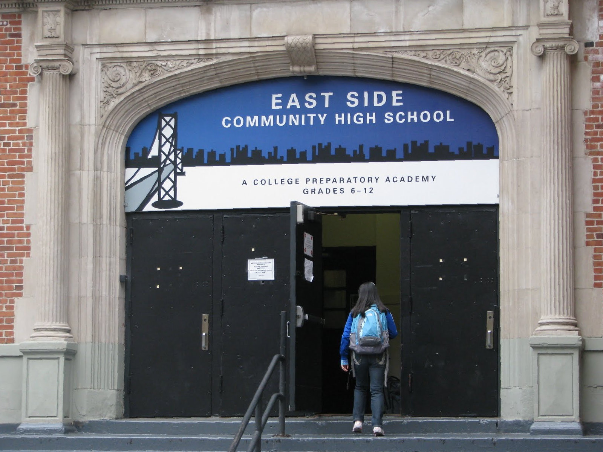
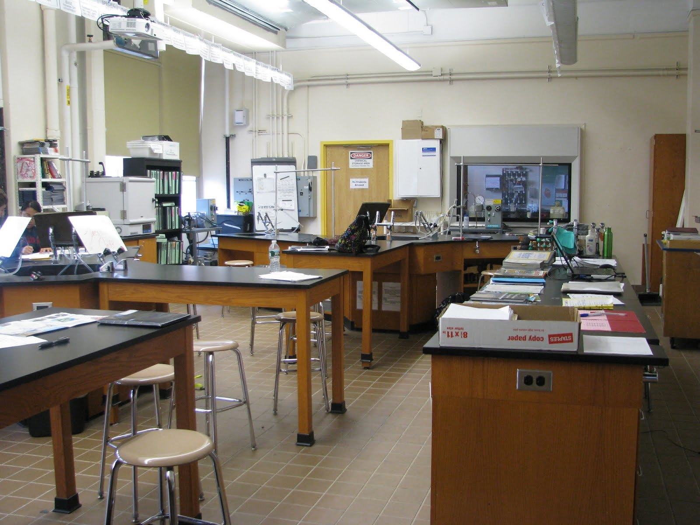

About East Side
East Side Community High School is located in Manhattan's East Village on 12th st and 1st Ave. Historically, it has committed to serve students from disadvantaged backgrounds, especially from the Lower East Side. Every student is given an advisor for the year who checks in with them every day and ensures every student is seen and needs are addressed. Advisors will bring up any concerns with teachers during weekly kidTalk meetings. Staff approach students holistically, and care for their socioemotional wellbeing in addition to their academic performance.

As part of the Consortium, East Side prides itself on is project-base learning. In lieu of the Regents, students do a semester-long research project and present their work in front of a panel of judges. For example, 11th graders design and conduct their own experiment and 12th graders write a history research paper based on their own thesis. Because they are not bound to standardized curricula, teachers have the liberty to adapt their curriculum and incorporate real world topics into the classroom. At the end of every semester, classes host "Roundtables" which are student-led presentations of their work for the semester. Outside guests are invited to come and ask them questions about what they learned. Students reflect on the process and learn not only the material, but how to communicate information clearly and engage with an audience.
East Side is committed to combatting hatred and bigotry in all forms, including racism, sexism, and homophobia. The Disrupting Racism Committee meets regularly to address racial issues concerning the staff, students, and families and plan initiatives to combat underlying institutional biases. Each semester, teachers take a day to reflect on the grades distribution and discuss patterns regarding academic performance and demographics.